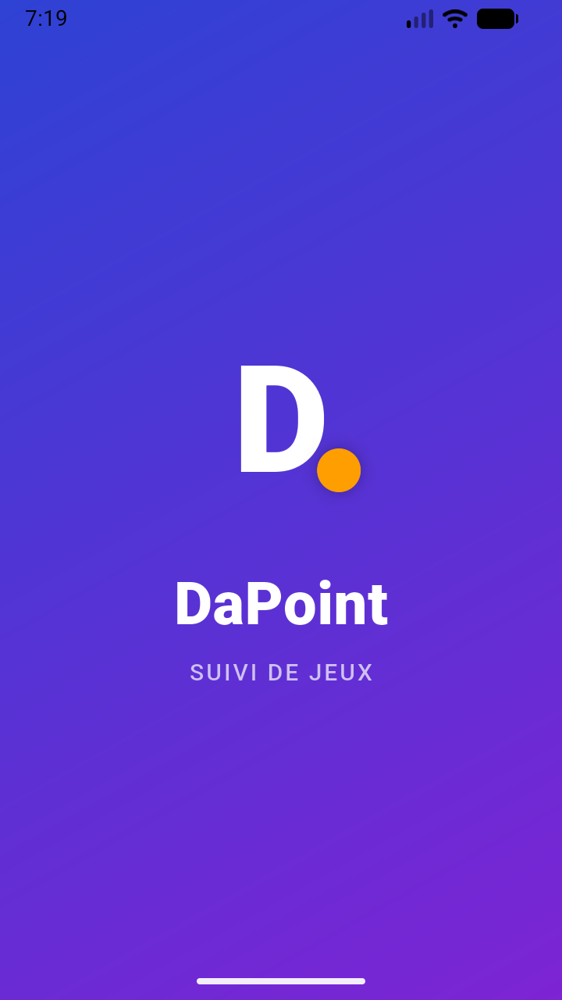
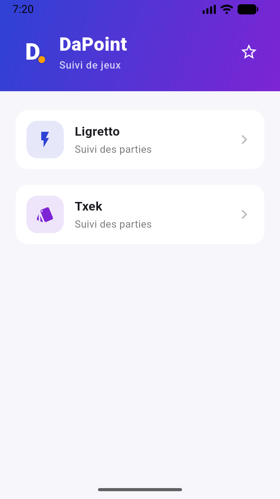
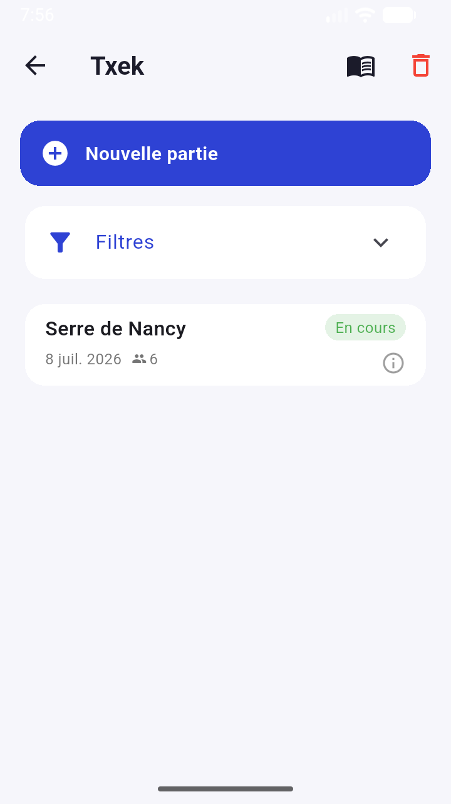
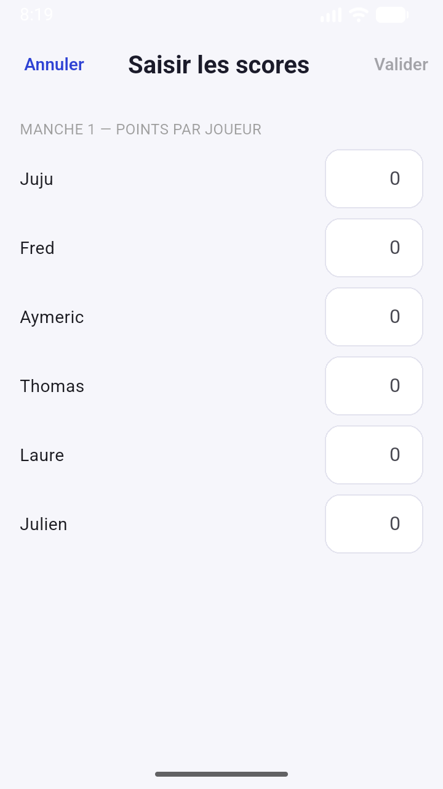

Application DaPoint
Gestion simple des scores pour Txek et Ligretto
Compatible avec les deux jeux déjà disponibles, et prête à accueillir de nouveaux favoris.
Ce qu’il faut savoir
DaPoint est un suivi de score dédié aux parties entre amis. L’application est déjà prête pour Txek et Ligretto, avec un design orienté facilité d’utilisation et mise à jour automatique.
- Deux jeux déjà pris en charge : Txek et Ligretto.
- iOS n’est pas encore disponible sur l’App Store.
- Google Play est prévu très bientôt.
Aperçu




Jeux disponibles
Les titres listés ci-dessous sont déjà intégrés dans l’application :
- Ligretto
- Txek — Règles officielles
Builds & téléchargements
- da_point-1.0.0-1-20260708-1902.apk — 49.22 MB
Installer l’APK
Si l’application n’est pas encore disponible sur Google Play, vous pouvez installer le fichier APK manuellement.
- Téléchargez l’APK depuis la section Builds & téléchargements.
- Ouvrez le fichier sur votre appareil Android.
- Autorisez l’installation depuis des sources externes si nécessaire : Paramètres > Sécurité > Installer des applications inconnues.
- Acceptez l’installation et lancez l’application.
Cela fonctionne tant que le système accepte l’APK et que les permissions sont activées sur l’appareil.
Sources et documentations
Le code source est disponible sur GitHub et le README principal décrit le projet et les étapes de build.
Pour mettre à jour la page : placez un build dans presentation/releases, puis lancez la tâche VS
Code suivante :
Flutter: build APK (release, versioned)